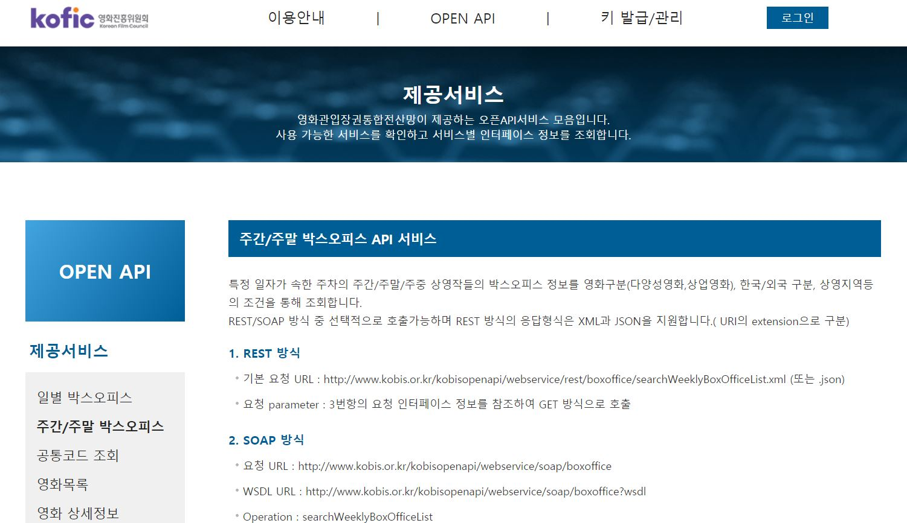
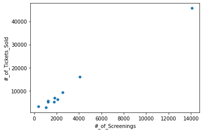

Image 수집 & API 활용
Table of contents
Image 수집
(downloading images from the web)
import requests
from bs4 import BeautifulSoup
import shutil # 파일/폴터 관련 작업할 때 쓰는 함수
## 이미지 저장 함수 만들어두기
def get_picture(picture_url, name): # name은 이미지를 저장할 이름
with requests.get(picture_url, stream=True) as r: # stream=True로 설정하면 connection이 계속 열려 있는다
f = open('{}.jpg'.format(name), 'wb') # wb= write binary (0101...)
shutil.copyfileobj(r.raw, f)
f.close()
## 아래 nytimes 기사에서 이미지 url을 가져온 후, 해당 이미지를 파일로 저장하기
r = requests.get('https://www.nytimes.com/2018/05/06/us/politics/gina-haspel-cia.html')
soup = BeautifulSoup(r.text, 'lxml')
picture_url = soup.find('meta', attrs={'name':'image'}).get('content') # 기사 속 이미지 url을 가져온다
get_picture(picture_url, 'nytimes_image') ## 함수 실행 -> 'nytimes_image.jpg'라는 이름으로 이미지 저장
- By default, when you make a request, the body of the response is downloaded immediatedly)
- 하지만 stream=True를 옵션으로 써주면 내용이 다운받아지는 것이 미뤄지고, connection이 계속 열려 있는다. (모든 데이터를 다 받아오거나 response를 닫아주기 전까지 connection이 지속)
- 그렇기에,
with requests.get(url, stream=True) as r:와 같은 형태로 stream=True를 사용하면 connection이 계속 닫혀 있다가 필요할 때만 열리도록 해주므로 효율적.
API로 데이터 수집
*API (Application Program Interface): 특정 사이트에서 특정 방식으로 특정한 양식의 데이터를 받아올 수 있는 일종의 매개체. (사이트마다 자사 API를 사용할 수 있는 방식 및 요건이 안내되어 있음)
- API로 받아오는 데이터는 보통 XML이나 JSON 형태인데, JSON 형태가 XML보다 심플하기 때문에 더 널리 사용된다
- JSON은 구조가 python dictionary와 유사하기 때문에, dictionary 사용할 때의 방법으로 접근 가능하다
+) REST 방식과 SOAP 방식?
- REST(Representational State Transfer): 네트워크를 통해서 컴퓨터들끼리 통신할 수 있게 해주는 아키텍처 스타일로, HTTP 프로토콜로 데이터를 전달한다. 대부분의 public API는 REST 방식을 따른다.
- SOAP(Simple Object Access Protocol): XML 기반의 메시지를 네트워크 상에서 교환하는 프로토콜. 보안이나 메시지 전송 등에 있어서 REST보다 더 많은 표준들이 정해져있기 때문에 조금 더 복잡하다.
KOFIC(영화진흥위원회) API
: 아래 링크의 사이트에서 key를 발급받고, 사용 방법 가이드를 확인할 수 있다.

* Weekly Boxoffice 데이터 받아오기
- 원하는 주간의 boxoffice 데이터를 받아오는 url 만들기
key = 'My_Key' ## 발급받은 key를 넣어준다 target_date = '20210104' # 20210104(월)부터 시작하는 주간 (01.04~01.10) weekchoice = '0' # 0: 주간(월~일), 1: 주말(금~일)(default), 2: 주중(월~목) url_basic = 'http://www.kobis.or.kr/kobisopenapi/webservice/rest/boxoffice/searchWeeklyBoxOfficeList.json?key={}&targetDt={}&weekGb={}' url = url_basic.format(key, target_date, weekchoice) - requests로 데이터를 받아 json parsing 가능 형태로 변환
- json library의 ‘loads’(=load from string을 의미) 사용 → string 형태로 담겨 있는 json data를 json parsing이 가능한 형태로 변환해준다.
import requests import json # requsts로 데이터를 가여온 후,json 형태로 변환해서 parsing할 수 있게 만든다 r = requests.get(url) text = r.text j = json.loads(text) ## json library의 'loads' 사용. -- loads는 load from string을 의미 (string 형태로 담겨 있는 json data를 json parsing이 가능한 형태로 변환)cf) r.text에는 이런 식으로 데이터가 담겨 있다
text{"boxOfficeResult":{"boxofficeType":"주간 박스오피스","showRange":"20210104~20210110","yearWeekTime":"202101","weeklyBoxOfficeList":[{"rnum":"1","rank":"1","rankInten":"0","rankOldAndNew":"OLD","movieCd":"20192567","movieNm":"원더 우먼 1984","openDt":"2020-12-23","salesAmt":"428613900","salesShare":"33.9","salesInten":"-952680560","salesChange":"-69.0","salesAcc":"4573697330","audiCnt":"45689","audiInten":"-111904","audiChange":"-71.0","audiAcc":"507121","scrnCnt":"1321","showCnt":"14083"},{"rnum":"2","rank":"2","rankInten":"0","rankOldAndNew":"OLD","movieCd":"20040725","movieNm":"화양연화","openDt":"2000-10-20","salesAmt":"147512030","salesShare":"11.7","salesInten":"-88550420","salesChange":"-37.5","salesAcc":"654243280","audiCnt":"15999","audiInten":"-11936","audiChange":"-42.7","audiAcc":"75797","scrnCnt":"447","showCnt":"4064"}, (생략) - weeklyBoxOfficeList의 첫번째 element만 먼저 parsing해봄
j['boxOfficeResult']['weeklyBoxOfficeList'][0]{'audiAcc': '507121', 'audiChange': '-71.0', 'audiCnt': '45689', 'audiInten': '-111904', 'movieCd': '20192567', 'movieNm': '원더 우먼 1984', 'openDt': '2020-12-23', 'rank': '1', 'rankInten': '0', 'rankOldAndNew': 'OLD', 'rnum': '1', 'salesAcc': '4573697330', 'salesAmt': '428613900', 'salesChange': '-69.0', 'salesInten': '-952680560', 'salesShare': '33.9', 'scrnCnt': '1321', 'showCnt': '14083'} - 해당 기간 Top10 영화의 이름, 관객수, 매출액, 상영횟수 데이터 가져와서 정리하기
- 관객수, 매출액, 상영횟수는 모두 누적이 아닌, 해당 기간의 수치
import pandas as pd import numpy as np # DataFrame 준비 df = pd.DataFrame(columns=['Movie', '#_of_Tickets_Sold', 'Revenue', '#_of_Screenings']) for item in j['boxOfficeResult']['weeklyBoxOfficeList']: srs = pd.Series([item['movieNm'], int(item['audiCnt']), int(item['salesAmt']), int(item['showCnt'])], index=['Movie', '#_of_Tickets_Sold', 'Revenue', '#_of_Screenings']) df = df.append(srs, ignore_index=True) dfMovie #_of_Tickets_Sold Revenue #_of_Screenings 0 원더 우먼 1984 45689 428613900 14083 1 화양연화 15999 147512030 4064 2 조제 9242 84387220 2559 3 도굴 6916 62909780 1831 4 뱅가드 6307 56071400 2116 5 미스터 존스 5618 50406750 1258 6 완벽한 가족 5229 46994840 1793 7 빅풋 주니어2: 패밀리가 떴다 5193 44030440 1218 8 라라랜드 3275 23033000 368 9 걸 2830 26387710 1046 - 추가) 상영횟수 - 티켓판매량 간의 상관관계를 확인
df.plot(kind='scatter', x='#_of_Screenings', y='#_of_Tickets_Sold')
- 대체로 상영횟수가 많을수록 티켓 판매량도 함께 늘어난다는 것을 알 수 있다.